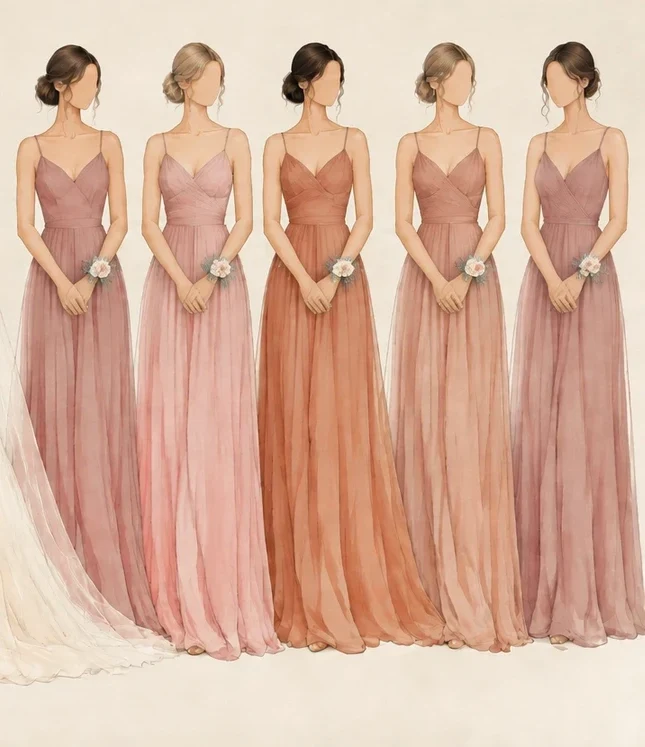

Minhas madrinhas
23 · 04 · 2027

um manual feito com carinho pra vocês
arrasta pro lado ou toca na seta →
Pra vocês
Minhas amigas, minhas irmãs de coração,
quando comecei a imaginar o nosso dia, vocês já estavam lá, do meu lado, como sempre estiveram. Cada uma de vocês faz parte da história que me trouxe até aqui, e eu não conseguiria subir naquele altar sem ter vocês pertinho.
Esse manual é só um jeitinho de deixar tudo mais leve: as cores, os combinados e o nosso cantinho no dia. O mais importante mesmo é que vocês estejam confortáveis, se sintam lindas e vivam essa festa com a gente.
Obrigada por dizerem sim pra mim.
com todo o meu carinho, Mayara
Escolha o seu tom
São cinco tons, todos da paleta do nosso casamento. Escolham o que mais combina com vocês. Pode repetir, tá? Juntas, eles formam um degradê lindo.
- Rosa queimado
- Rosé mais rosa
- Terracota suave
- Rosé terracota
- Malva rosado
Na hora de comprar, leva o celular com essa página aberta pra comparar a cor.
Do seu jeito
Vestido, cabelo, make, sapato e acessórios são livres. O único combinado é a cor: um dos cinco tons.
A ilustração é só uma inspiração. Escolham o modelo em que vocês se sentem lindas e confortáveis pra passar o dia todo com a gente e dançar até a pista fechar.
A corsage
A corsage é um arranjinho de flores usado no pulso. Nos casamentos, ela mostra pra todo mundo quem são as pessoas mais especiais ao lado da noiva, e é exatamente isso que vocês são pra mim.
A de vocês vai ter florzinhas em azul clarinho, champagne e rosê. Usem no dia com carinho, ela vai estar ali pra lembrar que eu escolhi cada uma de vocês.
um presentinho meu, com todo o amor
Me ajuda com a tradição?
Diz a tradição que a noiva leva no dia uma coisinha de cada. Se quiser, escolhe uma (ou mais) e me entrega no nosso cantinho. Não é obrigatório, e pode repetir sem problema!
- Algo velhoas raízes, a família, tudo que veio antes
- Algo novoa vida nova que começa
- Algo emprestadoa amizade e o carinho de quem empresta
- Algo azulo amor fiel e verdadeiro
- Uma moedinha no sapatoprosperidade pro casal. Pode ser mais de uma, cabe todas!
Combinem no grupo, ou façam surpresa. Eu vou amar de qualquer jeito.
Pra deixar o dia mais nosso
- Uma cartinha pra mimSe quiser, escreve um bilhetinho pra eu ler enquanto me arrumo. Me entrega fechadinho no nosso cantinho.
- A playlist do cantinhoManda no grupo uma música que tem a sua cara, pra tocar enquanto a gente se arruma juntas.
são só ideias, nada de obrigação
Kit SOS da madrinha
Umas coisinhas que salvam o dia (o seu e o meu):
- grampos e elástico de cabelo
- agulha, linha e alfinete
- lenço de papel
- curativo pra bolhinha
- o batom do seu look
- protetor de salto
- rasteirinha pra pista
- carregador portátil
Juntinhas desde cedo
- Nosso cantinhoVou reservar uma casa só pra gente se arrumar juntas. O endereço chega em breve.
- CerimôniaIgreja Matriz São Joaquim, no Centro Histórico de Garopaba, em frente à Praça 21 de Abril.
- FestaNo salão ao lado da igreja, até a pista fechar.
Os horários podem mudar um pouquinho. Eu aviso tudo por aqui.
O nosso site
Lá tem tudinho do casamento, pra vocês consultarem sempre que precisarem:
- o cronograma do dia
- o local e como chegar
- dicas de onde ficar em Garopaba
- a confirmação de presença
- o mural de recados
confirma lá também, tá?
Conta comigo
Qualquer dúvida, foto de vestido pra mostrar, música pra playlist ou só vontade de conversar: o nosso grupo é o lugar.
Entrar no grupo das madrinhasamo vocês. nos vemos no altar 💐